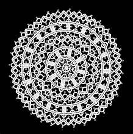

Croatian Artisanal Products and Crafts
A Tapestry of Tradition and Innovation Croatia's artisanal products and crafts are deeply rooted in its cultural heritage, reflecting centuries of tradition and innovation. From the sun-drenched fields of Istria to the rugged mountains of Dalmatia, Croatian artisans draw inspiration from the country's diverse landscapes and rich cultural tapestry to create unique and cherished products.
Olive Oil: Liquid Gold from the Adriatic
Croatia's olive oil is renowned for its exceptional quality and flavor, earning it a reputation as one of the finest in the world. Produced primarily along the Adriatic coast, Croatian olive oil is characterized by its fruity aroma, peppery taste, and vibrant green color. Whether drizzled over salads, grilled fish, or crusty bread, Croatian olive oil adds a touch of Mediterranean sunshine to any dish.
Wine: Nectar of the Gods from Croatian Vineyards
Croatia's wine-making tradition dates back thousands of years, with vineyards spread across the country's diverse terroirs. From crisp whites like Malvasia and Graševina to robust reds such as Plavac Mali and Teran, Croatian wines offer a rich tapestry of flavors and styles. Visitors can explore vineyards, wine cellars, and tasting rooms, immersing themselves in the country's wine-making heritage.

Lacework: Delicate Creations from Croatian Hands
Croatian lacework, known as "čipka," is a cherished tradition that dates back centuries. Produced by skilled artisans using intricate techniques passed down through generations, Croatian lacework is characterized by its delicate patterns and fine craftsmanship. From tablecloths and napkins to clothing and accessories, Croatian lacework adds a touch of elegance and tradition to any setting.
Pottery: Timeless Treasures from Croatian Kilns
Croatian pottery is celebrated for its beauty, functionality, and craftsmanship, with each piece reflecting the unique styles and traditions of its region. From colorful majolica ceramics in Dubrovnik to rustic earthenware in Zagorje, Croatian pottery encompasses a wide range of styles and techniques. Whether used for cooking, serving, or decoration, Croatian pottery is a cherished expression of the country's artistic heritage.
Honey: Sweet Nectar from Croatia's Beehives
Croatian honey is prized for its purity, flavor, and medicinal properties, with beekeeping traditions dating back centuries. Produced from a variety of floral sources, including lavender, acacia, and wildflowers, Croatian honey comes in a range of flavors and hues. Whether enjoyed on toast, in tea, or as a natural sweetener, Croatian honey is a delicious and nutritious treat.
Traditional Textiles: Woven Tales of Croatian Culture
Croatian traditional textiles, such as "tkanice" and "pokrivnice," are woven treasures that tell stories of the country's cultural heritage. Produced using traditional weaving techniques and natural fibers, Croatian textiles are known for their intricate patterns and vibrant colors. From table runners and scarves to traditional costumes and home décor, Croatian textiles are cherished heirlooms that celebrate the country's rich tapestry of traditions.
Cheese: Savory Delights from Croatia's Dairy Farms
Croatian cheese, or "sir," is a diverse and delicious category of artisanal products, with each region producing its own unique varieties. From the salty and tangy flavors of Pag cheese to the creamy textures of Škripavac and Paški sir, Croatian cheese offers a tantalizing array of flavors and textures. Whether enjoyed on its own, paired with local wines, or incorporated into traditional dishes, Croatian cheese is a culinary delight that embodies the country's rich dairy heritage.